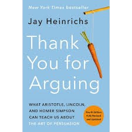

I read this book cuz it was the summer reading assignment for Ap Lang. It was like about like being consitent means you get 1% better every day. It shifted my perspective on discipline and consistency and the concept of failure.
Thank You For Arguing
This was the book everyone had to read for Ap Lang. I read it the day before school it was like talking about rhetoric or something. It informed readers of everyday rhetoric which taught them to win everyday arguments.

1984
Didin't finish, but the book highlighted how the could completely destory any sense of privacy in the future. This is symbolized by the "big brother is watching you". It's like digital footprint was now accesibie in causual conversation
Never Finished
David Gnoggins was just yapping about how hard everything was even though it was completely optional. Made me realize I complain way too much